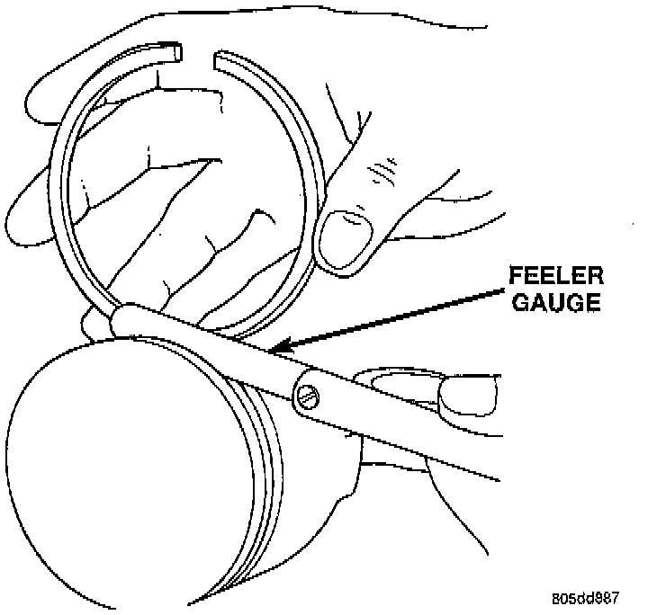
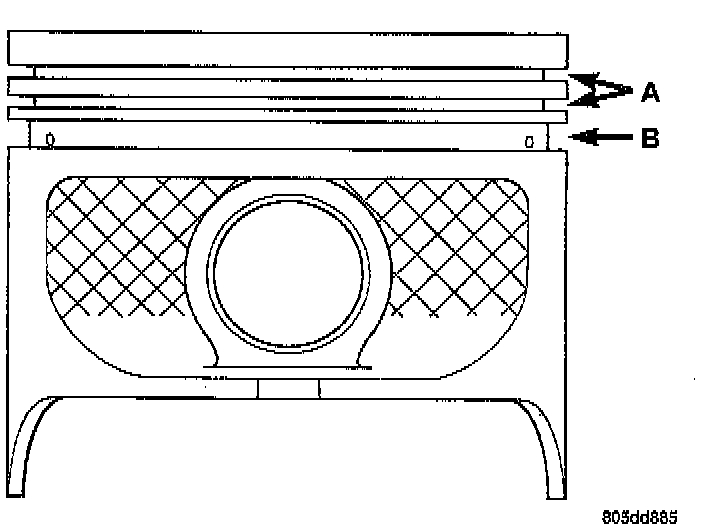
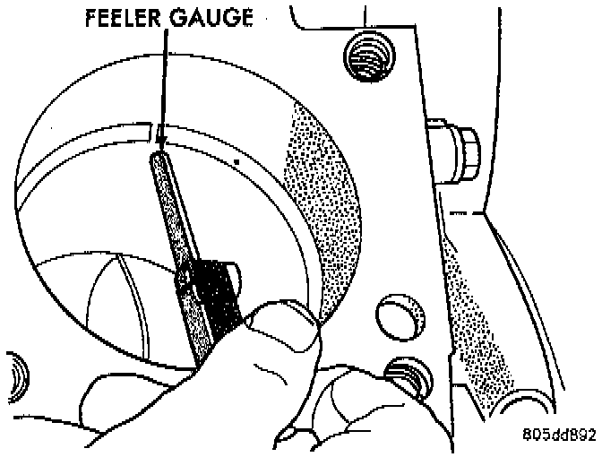

Service Procedures
SIDE GROOVE CLEARANCE1. Carefully clean the carbon from all ring grooves. Oil drain openings in the oil ring groove and pin boss must be clear. DO NOT remove metal from the grooves or lands. This will change ring-to-groove clearances and will damage the ring-to-land seating.
2. Be sure the piston ring grooves are free of nicks and burrs.

3. Measure the ring side clearance with a feeler gauge fitted snugly between the ring land and ring. Rotate the ring in the groove. It must move freely around circumference of the groove.

NOTE: Ring groove height should be:
^ A 1.530-1.555 mm (0.0602-0.0612 inch)
^ B 4.035-4.060 mm (0.1589-0.1598 inch)
Ring Side Clearance Measurement
^ Top Compression Ring: 0.042 to 0.084 mm (0.0017 to 0.0033 inch)
^ Second Compression Ring: 0.042 to 0.084 mm (0.0017 to 0.0033 inch)
^ Oil Control Ring: 0.06 to 0.21 mm (0.0024 to 0.0083 inch)

RING END GAP MEASUREMENT
Place ring in the cylinder bore and push down with inverted piston to position near lower end of the ring travel. Measure ring gap with a feeler gauge fitting snugly between ring ends.
^ Top Compression Ring: 0.229 to 0.610 mm (0.0090 to 0.0240 inch)
^ Second Comparison Ring: 0.483 to 0.965 mm (0.0190 to 0.0380 inch)
^ Oil Control Ring: 0.254 to 1.500 mm (0.010 to 0.060 inch)